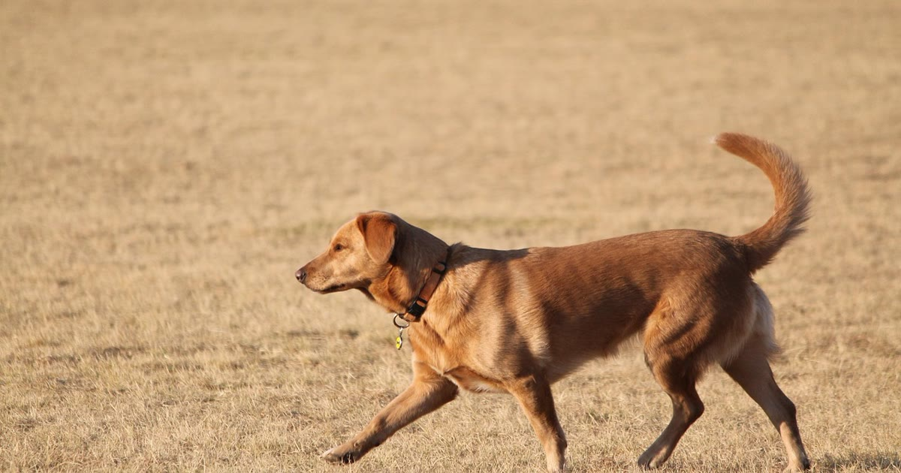

Uma coleira GPS "sem mensalidade" costuma usar Bluetooth ou uma rede de baixo consumo (NB-IoT), em vez de chip de operadora — porque o custo recorrente normalmente vem justamente da assinatura de dados móveis usada para transmitir a localização pela internet. O problema é que "sem mensalidade" nem sempre significa "sem nenhuma cobrança": alguns anúncios omitem taxas de ativação ou de acesso a recursos avançados do app.
Este artigo explica o que checar antes de comprar para não ter surpresa depois.
Modelos com chip de operadora dependem de um plano de dados para funcionar — sem isso, o dispositivo simplesmente não transmite a localização. É esse custo de conectividade que gera a mensalidade. Já modelos Bluetooth ou baseados em redes de baixo consumo (NB-IoT), usadas por alguns modelos mais recentes, podem operar sem taxa recorrente, porque a transmissão de dados é mínima e de baixo custo para o fabricante, embora nem toda cobertura NB-IoT esteja disponível em todas as regiões do Brasil.
entenda a diferença técnica entre bluetooth e chip de operadora
| Item de custo | Bluetooth | NB-IoT (baixo consumo) | Chip de operadora |
|---|---|---|---|
| Mensalidade | Geralmente não | Geralmente não | Geralmente sim |
| Taxa de ativação escondida no anúncio | Rara | Possível — checar descrição | Possível — checar descrição |
| Custo de troca de bateria/acessórios | Baixo | Baixo a médio | Médio |
Para a diferença técnica completa de alcance e funcionamento entre essas tecnologias — não só o lado do custo — veja o comparativo dedicado entre Bluetooth e chip de operadora.
Se seu cão foge com frequência e para longe, um modelo Bluetooth sem mensalidade pode não resolver o problema real — o alcance curto limita a utilidade justamente no cenário mais crítico. Nesses casos, vale reconsiderar um modelo com chip de operadora, mesmo com custo recorrente, porque o alcance maior tem valor prático direto.
se seu cão foge muito, veja o que priorizar na escolha
Não existe "melhor coleira sem mensalidade" universal — existe a melhor opção para a distância que seu pet costuma percorrer quando foge. Para uso dentro de casa e quintal, Bluetooth ou NB-IoT resolvem sem custo recorrente. Para cobertura maior, avalie se vale pagar a mensalidade do chip de operadora antes de descartar essa opção só pelo custo.
volte ao guia completo de coleira GPS para pet
Escrito pela Equipe Smart Pet Gadgets, redação especializada em comparativos de produtos pet no mercado brasileiro. Veja nossa política editorial e como verificamos as fontes citadas neste artigo.
🐾 Confira o preço e a disponibilidade atual no Mercado Livre.
Ver no Mercado Livre →Link de afiliado: podemos receber uma comissão por compras feitas através deste link, sem custo adicional para você.
Nildo Alves — curadoria de produtos pet no Smart Pet Gadgets. Testa e pesquisa produtos para cães e gatos, cruzando especificações de fabricante com boas práticas veterinárias e dados de mercado.
Sobre o Smart Pet Gadgets · Contato · Política editorial e de afiliados